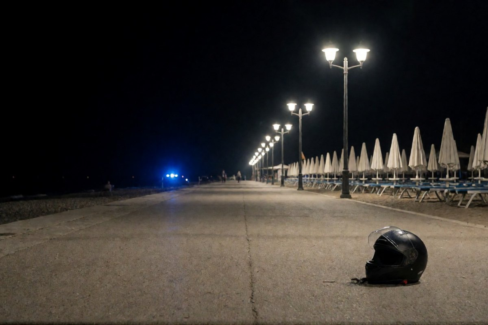

Cronaca · 7 novembre 2026
Rimini, quattro anni al ristoratore che colpì con il casco

Il giudice ha riqualificato il tentato omicidio in lesioni gravi e non ha riconosciuto la legittima difesa. L'uomo colpito, che quella sera aveva rapinato un avvocato, è stato condannato a due anni e due mesi.
di Franco Zanghì
Una sentenza del tribunale di Rimini è diventata in poche ore un caso nazionale, riassunta così: due anni a chi rapina, quattro a chi si difende. I numeri sono quelli. Ma le due pene non misurano la stessa cosa, e vale la pena rimettere i fatti in fila.
La sera del 13 luglio 2024
Siamo sul lungomare fra Viserba e Rivabella, a Rimini. Secondo le cronache locali un uomo di 39 anni, ubriaco, semina il panico: ruba due bottiglie di birra in un negozio, poi aggredisce un avvocato appena uscito da una festa, lo colpisce con due testate e gli strappa lo zaino. L'avvocato riporterà quaranta giorni di prognosi. Più persone chiamano il 112.
In via Toscanelli c'è un ristoratore di 37 anni, padre di famiglia, a cena con la figlia piccola. Affronta l'uomo e lo colpisce al volto con un casco da moto. L'uomo cade e finisce in coma: resterà più di un mese in terapia intensiva all'ospedale Bufalini di Cesena. Secondo Newsrimini, il ristoratore non lo soccorre.
Le due versioni
La difesa del ristoratore sostiene la legittima difesa: dice che l'uomo aveva in mano una bottiglia rotta e che il giorno prima il suo assistito aveva subito una rapina nel proprio locale ed era scosso. Già nella fase delle indagini, però, la giudice aveva guardato le immagini delle telecamere e non aveva riscontrato un movimento del braccio compatibile con un'aggressione in corso.
La sentenza
Il 4 novembre il giudice dell'udienza preliminare Alessandro Capodimonte ha deciso su entrambi con il rito abbreviato, che riduce la pena di un terzo. Il ristoratore era accusato di tentato omicidio: il giudice ha riqualificato l'accusa in lesioni gravi e lo ha condannato a quattro anni, senza sospensione condizionale. La pubblica ministera Paola Bonetti aveva chiesto tredici anni e quattro mesi. Il 39enne è stato condannato a due anni e due mesi per la rapina all'avvocato, mentre la procura ne aveva chiesti tre e quattro mesi; oggi è in carcere per un'altra vicenda.
La legittima difesa, per il ristoratore, non è stata riconosciuta. Il suo avvocato, Giuliano Renzi, ha annunciato l'appello.
Il punto
Si capisce chi legge questa notizia e sente un'ingiustizia: chi ferma un violento non dovrebbe pagare più del violento. È un sentimento comprensibile, e la legge sulla legittima difesa esiste proprio per questo. Ma la legittima difesa vale quando c'è un pericolo in corso, e qui il giudice, con le telecamere davanti, ha stabilito che non ci fosse. Può aver sbagliato, e ci sarà un appello a dirlo. Quello che non conviene fare è trasformare un colpo in faccia che manda in coma una persona in un gesto da applaudire: la giustizia fai da te non protegge nessuno, nemmeno chi la fa.
Fonti
- Tgcom24, «Colpì rapinatore con un casco mandandolo in coma: condannato a 4 anni», 4 novembre 2026
- Gazzetta di Parma, «Colpì un rapinatore con il casco e lo mandò in coma: ristoratore condannato a 4 anni», 4 novembre 2026
- Fanpage, «Colpisce il rapinatore con il casco della moto e lo manda in coma: chiesti 13 anni ma il giudice gliene dà 4», 4 novembre 2026
- Newsrimini e Altarimini, cronache locali del 4 e 5 novembre 2026
Le motivazioni della sentenza non sono ancora depositate: saranno quelle a spiegare perché la legittima difesa non è stata riconosciuta. Entrambe le condanne sono di primo grado e per entrambi gli imputati vale la presunzione d'innocenza fino alla sentenza definitiva. I nomi dei due condannati non compaiono: le cronache locali li riportano solo per iniziali.